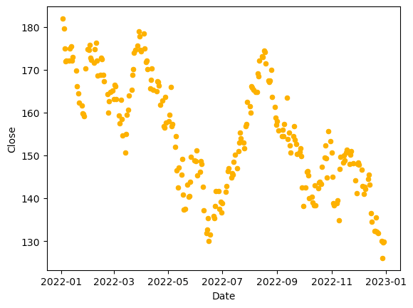
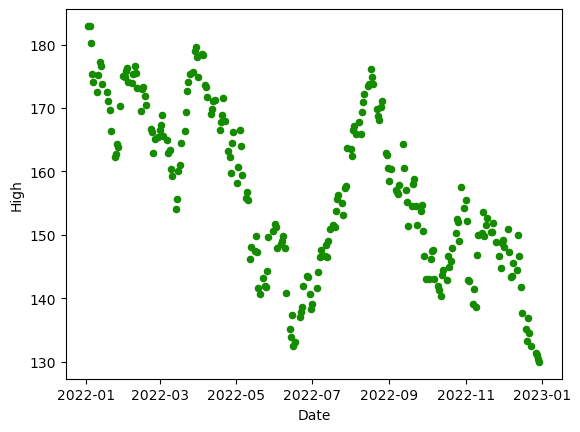
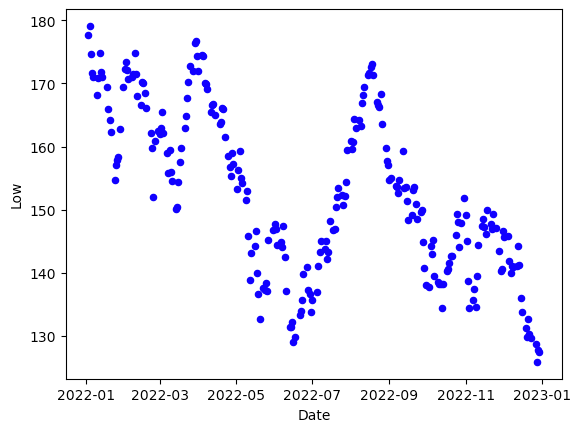
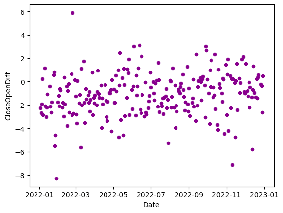
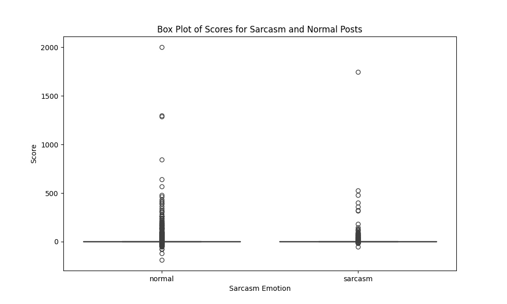

Understanding and Optimizing iPhone Discussions on Reddit (NLP)
Note:Link to the source code - 1
Note:Link to the source code - 2
Note:Link to the source code - 3
Note:Link to the source code - 4
Note:Link to the source code - external dataset
Executive Summary
Moving beyond the community dynamics, our natural language processing (NLP) tasks center around comprehending and enhancing iPhone-related discussions on Reddit. The application of Natural Language Processing (NLP) models brings many advantages to users and businesses. Our NLP model's utilization in iPhone discussions provides users with richer and deeper information, helping them better understand the product and make informed choices. Simultaneously, these models offer Apple Inc. crucial market insights and user feedback, aiding in product innovation and optimizing marketing strategies. Through these models, interactions between users and businesses become more intelligent and intimate.
Analysis of Apple products released in 2022 (NLP 1)
A Reminder for Our Business Goal: Focusing on the products released by Apple in 2022, analyze the performance of different versions of iPhone products, and explore the different product focuses of different products that Reddit users are concerned about. The mission is to provide users with valuable insights to make informed purchasing decisions; and to provide strategic recommendations to Apple based on user discussions.
Analysis:
We use post data from different iPhone communities to measure reddit's interest and focus on different iPhone models. In order to more clearly show the differences between different models, Stacked Bar Chart is selected for display here.
This is a dynamic chart showing the popularity and discussion points of different iPhone versions.
On Reddit, the iPhone 14 Pro is the most discussed model, followed by the iPhone 14. iPhone SE3 has the lowest frequency of discussion, which reflects community members’ high interest in the new iPhone 14.
Storage function In the discussion of all iPhone versions, storage is not the main focus; there is also relatively little discussion about the chip, which may indicate that users pay less attention to performance than other features, or that chip performance does not differ significantly between different models. Camera, screen and price: These three are the most discussed by users, which shows that users are very concerned about the quality of the camera and screen as well as the price of the iPhone. It can also be inferred that these three aspects are the decisive factors for users to purchase iPhone products.
For Apple, advertising narratives that emphasize camera quality, screen innovation and value for money can boost sales. You can also interact with the community on platforms like Reddit. Create discussions around lesser-mentioned features like storage and chip performance to educate users on the benefits. Or assess the price sensitivity indicated in the discussion and consider introducing promotional offers or payment plans that address affordability issues.
For users, this kind of summary information extraction allows them to more quickly obtain the advantages and disadvantages of different models, and make selections that meet their own needs, saving time and effort.
Analyzing Apple Stock Fluctuations Around iPhone Releases (NLP 2)
A Reminder for Our Business Goal: Analyze sentiment changes in iPhone discussions by users before and after September.
Analysis:
September was a significant month for the iPhone in 2022, as Apple released its latest iOS system: iOS 15. We collected all discussions related to the iPhone throughout 2022. Using a pretrained sentiment model, we observed users' attitudes toward the new iOS system. Before the release of the new system, there were 129,150 positive posts, accounting for 43% of the total, and 157,409 negative posts, representing 52%. The remaining 0.05% of posts were neutral. After the release, there was a notable increase in positive posts to 141,986, maintaining the same percentage in the overall post count after September. Not only did the number of positive posts increase significantly, but the number of negative posts also rose to 171,076, while their percentage remained unchanged.
Although the ratio of positive to negative posts did not notably change before and after, it's evident that there was a substantial increase in iPhone-related posts after the launch of iOS 15. This indicates a heightened interest in Apple following the release of the new iOS system, even though the ratio of positive to negative sentiments remained constant.
   We also obtained Apple's stock market data for 2022. From these figures, it's apparent that there was minimal difference in Apple's stock market performance before and after September 2022. In September, there was a significant change in the stock price, but it might not necessarily be a result of the release of iOS 15. As there was also a significant fluctuation in March, coinciding with the launch of the new iPhone SE 3, the September fluctuation in stock price might similarly be due to the release of another new version, the iPhone 14
Identifying Ironic Comments or Posts (NLP 3)
A Reminder for Our Business Goal: Developing the capability to recognize ironic instances within user comments enhances our understanding of subtle communication on the platform, enabling users to better navigate and comprehend community content.
Analysis: 
First, we randomly selected 10,000 data as a sample. Among these, there are 8,757 comments labeled as normal and 1,243 labeled as sarcasm. This means normals constitute 87%, while sarcasm constitutes 12%. These percentages closely match the overall data, indicating that this random sampling is representative.
Based on the 10,000-sample comparison in the above boxplot, we observed that the mean and median scores of normal comments are higher than those of sarcasm comments. The calculated mean and median scores for "normal" comments significantly exceeded those associated with "sarcasm" comments. This indicates a significant difference in user interaction trends, with comments labeled as "normal" consistently attracting greater positive feedback from the platform's user community.
Understanding these sarcastic comments can enhance the comprehension of nuanced communication on Reddit.
iPhone Subreddit Topic Forecast (NLP 4)
A Reminder for Our Business Goal: Use a language model to automatically generate questions from posts that may reflect the concerns of Reddit community users about Apple products released in 2022. By analyzing these issues, the product features and performance indicators that users are most interested in can be extracted, and it can also provide guidance for Apple to adjust the direction of product development in a timely manner.
Analysis:
Using high-level language modeling, we generated a list of questions users might ask directly from Reddit community discussions about Apple's 2022 product lineup. By analyzing these issues, we can extract the product functions and performance indicators that users are most interested in, and can also provide guidance for Apple to adjust the direction of product development in a timely manner. Here are the questions we generated based on the data.
- What is the name of the phone I bought?
- What is the name of the iPhone 14 model?
- What is the new iPhone 14 Pro?
- What is the bug fix for iOS 1601?
- What is the battery life of the iPhone 14 Pro?
- What is the iPhone 14 Pro Max?
- What is the name of the reviewers who have watched several reviews?
- What is the noise cancellation on the iPhone 14 vs the 13?
- What is the Speck clear case?
- What is the best way to transfer contacts, pictures, etc., to the new phone?
- What was the name of the Mini Pro that I was curious about?
- What is the delivery date for my iPhone 14 Pro Max?
- What is the bug fixes for iOS 1601?
- What date was pushed back from next Tuesday to Friday?
- Where can I buy a new iPhone 13 Pro Max that is unlocked?
- What is the benefit of using iPhone 14 with eSIM while traveling?
- What color did all of the three iPhone models have?
- What is the current size of my phone?
- What is there to expect that I haven't with my old phone?
- Which leaks were the least accurate?
- What leaks were the least accurate?
- What is the overall color of the picture on the iPhone 14 Pro?
- What is the name of the iPhone 14 Pro Pro ProMotion 120Hz?
The questions generated reflect users' curiosity and concerns about iPhone 14, covering areas such as device naming, model details, software updates, battery life, noise reduction, case options, data transfer, delivery date, purchase location, travel offers, color options and more , screen size and display capabilities. This shows that users are interested in a range of topics from technical specifications to practical use. If Reddit can use the results of this model and place them below the user's search bar as a prompt, it may help users clarify their questions, enrich the user experience and stimulate users' interest in posting, thus improving the user experience and further enhancing the activity of the Reddit community. degree, improving the overall interaction quality and satisfaction within the community.